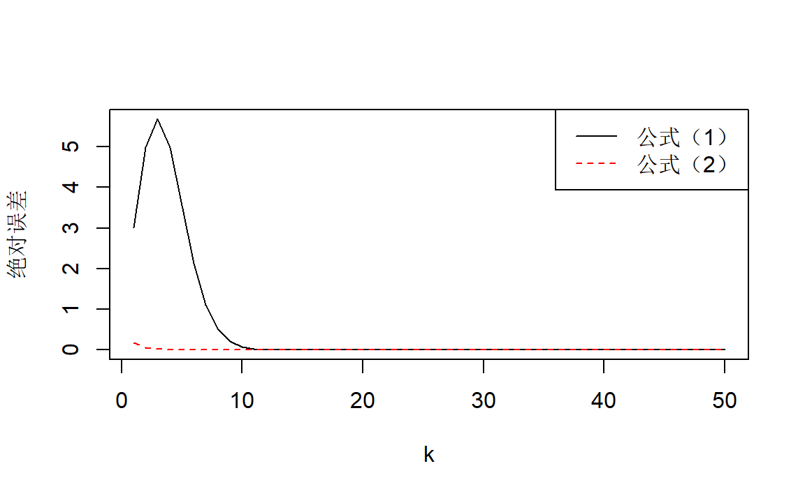

1 误差
library(purrr)1.1 习题
习题2
设某正数\(a\)四舍五入后保留了\(p\)位有效数字，表示成\(a^* = (0.a_1a_2\cdots a_p)_{10}\times10^m(a_1\ne0)\)。 估计其绝对误差和相对误差的范围， 并分析误差与有效数字位数\(p\)的关系。
解：
容易知道，\(m\ge p\)。先通过一个例子直观理解一下，不妨取\(a=12546\)，当取\(p=3\)，有\(a^*=0.125\times 10^5=12500\)，当取\(p=4\)，有\(a^*=0.1255\times 10^5=12550\)。
所以可以得到，\(m\)实际上是正数\(a\)的位数，而\(p\)则是要保留的有效数字的位数。
其绝对误差： \[ \Delta = a-a^*\le 0.5\times10^{m-p} \]
利用\(a\ge10^m\)，其相对误差： \[ \delta = \frac{\Delta}{a} \le\frac{0.5\times10^{m-p}}{10^m}=0.5\times10^{-p} \]
习题3
解：
先定义通项：
myfun <- function(n)
{
(-1)^(n+1)/n
}
n <- 10^6S <- 0
for (i in 1:n) {
S <- S+myfun(i)
}
abs(S-log(2))
#> [1] 5e-07S <- 0
for (i in 1:n) {
S <- S+myfun(n+1-i)
}
abs(S-log(2))
#> [1] 5e-07S <- 0
l <- vector("double",n/2)
for (i in 1:(n/2)) {
l[[i]] <- myfun(2*i-1)+myfun(2*i)
}
for (i in l) {
S <- S+i
}
abs(S-log(2))
#> [1] 5e-07l <- vector("double",n/2)
for (i in 1:(n/2)) {
l[[i]] <- 1/(2*n*2*(n-1))
}
for (i in l) {
S <- S+i
}
abs(S-log(2))
#> [1] 3.75e-07第4种方法精度更高。
习题4
解：
x <- 1:4
myfun1 <- function(x, k=10)
{
S <- 1
for (i in 1:k) {
m <- (-x)^i/factorial(i)
S <- S+m
}
S
}
myfun2 <- function(x, k=10)
{
S <- 1
for (i in 1:k) {
m <- x^i/factorial(i)
S <- S+m
}
1/S
}
s1 <- map_dbl(x,myfun1)
s2 <- map_dbl(x,myfun2)
s <- exp(-x)
df <- data.frame(x,s1=abs(s1-s),s2=abs(s2-s))
knitr::kable(df)| x | s1 | s2 |
|---|---|---|
| 1 | 0.000 | 0 |
| 2 | 0.000 | 0 |
| 3 | 0.004 | 0 |
| 4 | 0.078 | 0 |
方法1的误差太大了，不妨增大\(k\)值：
s1 <- map_dbl(x,myfun1,k=100)
s2 <- map_dbl(x,myfun2)
s <- exp(-x)
df <- data.frame(x,s1=abs(s1-s),s2=abs(s2-s))
knitr::kable(df)| x | s1 | s2 |
|---|---|---|
| 1 | 0 | 0 |
| 2 | 0 | 0 |
| 3 | 0 | 0 |
| 4 | 0 | 0 |
误差瞬间下去，说明方法1的收敛比较慢。以\(x=4\)为例，探究两个方法的收敛速度：
x <- 4
k <- 1:50
s1 <- map_dbl(k,myfun1,x=x)
s2 <- map_dbl(k,myfun2,x=x)
s <- exp(-x)
opar <- par(no.readonly = TRUE)
plot(k,abs(s1-s),"l",ylab="")
lines(k,abs(s2-s),lty=2,col="red")
title(ylab="绝对误差")
legend("topright",c("公式（1）","公式（2）"),lty=c(1,2),col=c("black","red"))
par(opar)
可以看到公式（1）的收敛速度一开始是很慢的。
习题5
解：
载入数据：
x <- c(249, 254, 243, 268, 253, 269, 287, 241, 273, 306303, 280, 260, 256, 278, 344, 304, 283, 310)
n <- length(x)公式1：
s1 <- 0
for (i in x) {
s1 <- signif(s1+signif(i^2,digits = 6),digits = 6)
}
s1 <- signif(s1-n*mean(x),digits = 6)
s1 <- signif(s1/(n-1),digits = 6)公式2：
s2 <- 0
m <- mean(x)
for (i in x) {
s2 <- signif(s2+signif((i-m)^2,digits = 6),digits = 6)
}
s2 <- signif(s2/(n-1),digits = 6)比较：
df <- data.frame(`函数直接计算`=var(x),`公式1`=s1,`公式2`=s2)
knitr::kable(df)| 函数直接计算 | 公式1 | 公式2 |
|---|---|---|
| 5.2e+09 | 5.52e+09 | 5.2e+09 |
公式2比公式1更精确，公式1先计算平方求和，值太大，保留6位有效数字之后损失较多。
习题6
解：